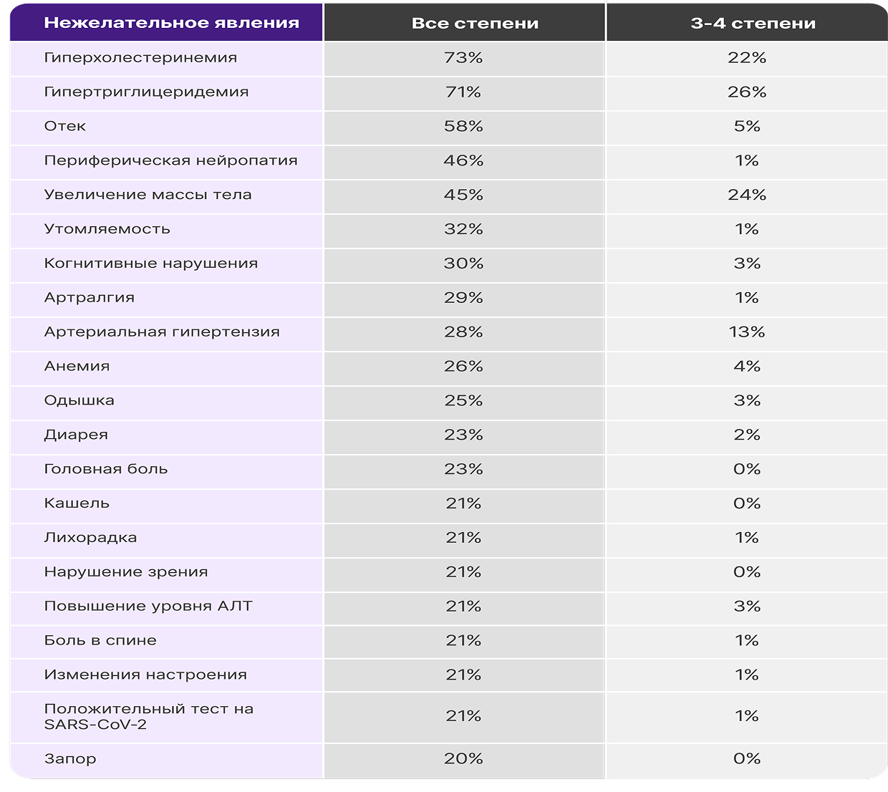

Безопасность препарата ЛОРВИКВА®
Нежелательные явления хорошо изучены и не менялись в течение 7 лет наблюдения, большинство из них возникали на ранних стадиях лечения 1,2*
Большинство НЯ наблюдались в течение первых 6 месяцев лечения2,3
По результатам 7‑летнего наблюдения не выявлено увеличения частоты НЯ 3–4 степени тяжести1†
только5%
пациентов прекратили лечение ЛОРВИКВА® из-за НЯ, связанными с проводимой терапией1.
После первых 26 месяцев наблюдения новых отмен терапии по причине проводимого лечения не зафиксировано1.
Профиль безопасности препарата ЛОРВИКВА® по результатам анализа данных 7-летнего наблюдения соответствовал профилю безопасности, установленному в первичном анализе. Новых сигналов по безопасности не выявлено1*
Управление терапией и контроль НЯ
Основные шаги для контроля нежелательных явлений во время лечения препаратом ЛОРВИКВА®
НЯ (любой степени), возникавшие у ≥20% пациентов, получавших препарат ЛОРВИКВА® (n = 149)1

Адаптировано из Shaw AT, et al. Ann Oncol. 2026; doi: https://doi.org/10.1016/j.annonc.2026.05.692.
Общая характеристика лекарственного препарата


НЯ – нежелательное явление; СОК – системно-органный класс; SARS‑CoV‑2 – коронавирус 2‑го типа, вызывающий тяжёлый острый респираторный синдром;
Список источников:
1. Shaw AT, et al. Ann Oncol. 2026; doi:
https://doi.org/10.1016/j.annonc.2026.05.692.
2. Liu G, et al. Oncologist. 2025;30(10):oyaf287.
3. Liu G, et al. Lung Cancer. 2024;191:107535.